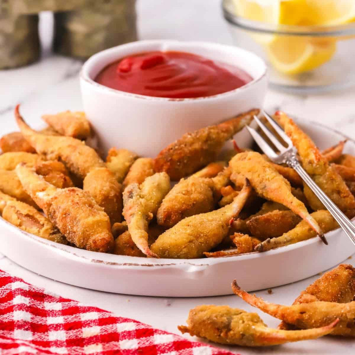

Fried Blue Crab Claws

Description
Fried Crab Claws, sometimes called Fried Crab Fingers or Fried Cocktail Crab Claws, are a quick and easy appetizer or main dish. This simple recipe features blue crab claws soaked in buttermilk, dredged in seasoned corn flour, and deep-fried until golden brown, crispy and delicious.
Ingredients
- Cocktail crab claws
- Buttermilk
- Corn Flour
- Creole seasoning
- Kosher salt
- Peanut oil
Steps
- Add the corn flour, Creole seasoning, and salt to a pie plate or shallow dish. Whisk to combine.
- Add the buttermilk to a medium-size bowl and about half of the claws.
- Remove the crab claws from the buttermilk and let any excess drip off. Add them to the corn flour breading mix and toss gently to coat.
- When the pieces are coated, remove them and place them on a plate. Repeat steps two to four with the remaining claws until all are soaked in buttermilk and dredged in the corn flour breading.
- Pour the peanut oil into a 10-inch cast-iron skillet. The oil should be about one-inch deep. Heat the oil over medium-high heat until it reaches 350 degrees F. as measured with a candy or deep-fry thermometer.
- When the oil has reached 350 degrees, carefully add about a dozen crab claws to the hot oil. Stir gently to separate any that stick together and let them cook. Use a spider strainer or slotted spoon and remove the claws when they are light golden brown and crispy. This should only take about a minute.
- Place the fried claws on a paper towel over a wire cooling rack. If the oil temperature drops below 350 degrees, wait until it returns to 350 before adding any more. Repeat this process until all of the pieces are fried.